Guía de uso
Del enlace a la diapositiva
en un minuto
Crea códigos QR personalizados y citas científicas con un QR que lleva al artículo, listos para tus diapositivas.
Guía de uso
Crea códigos QR personalizados y citas científicas con un QR que lleva al artículo, listos para tus diapositivas.
Índice
QR Lab convierte un enlace, un contacto o una red Wi-Fi en un código QR con el estilo de tus diapositivas, y un artículo científico en una cita con un QR que lleva al artículo.
En el navegador
niki977.github.io/ultraspeaker-qr-lab, en ordenador y teléfono. Los QR se descargan en PNG o SVG para PowerPoint, Keynote o un documento; las citas se copian.
En PowerPoint
Pestaña Inicio → grupo The Ultraspeaker → QR Lab. El panel se abre a la derecha e inserta QR y citas en la diapositiva seleccionada.
Próximamente
El panel de PowerPoint está en pruebas y estará disponible en breve. Esta guía ya lo describe por completo.
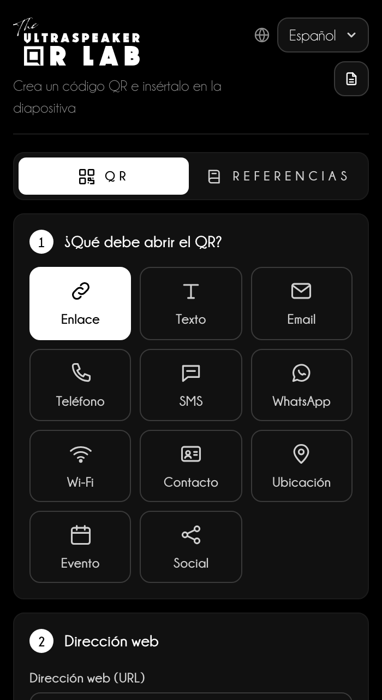
Qué queda en el dispositivo
Idioma, diseño, QR recientes, plantillas y referencias quedan en la memoria del navegador; en PowerPoint las referencias quedan en el archivo. La contraseña Wi-Fi nunca se guarda.
Los pasos a la izquierda y la vista previa a la derecha, siempre visible.
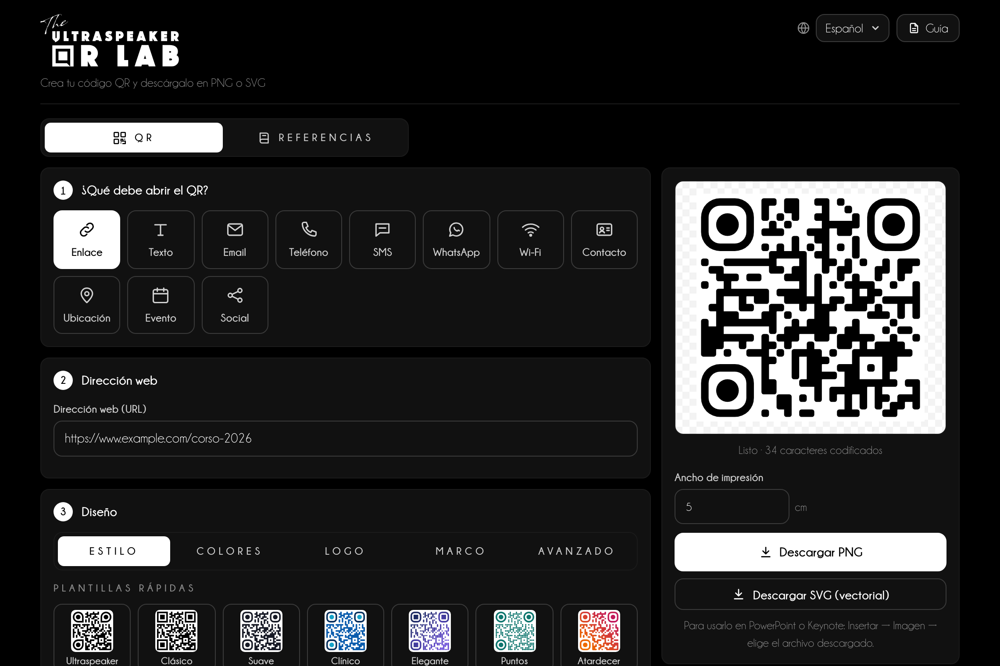
1234567Un QR hacia la página de tu curso, para la última diapositiva de la charla.
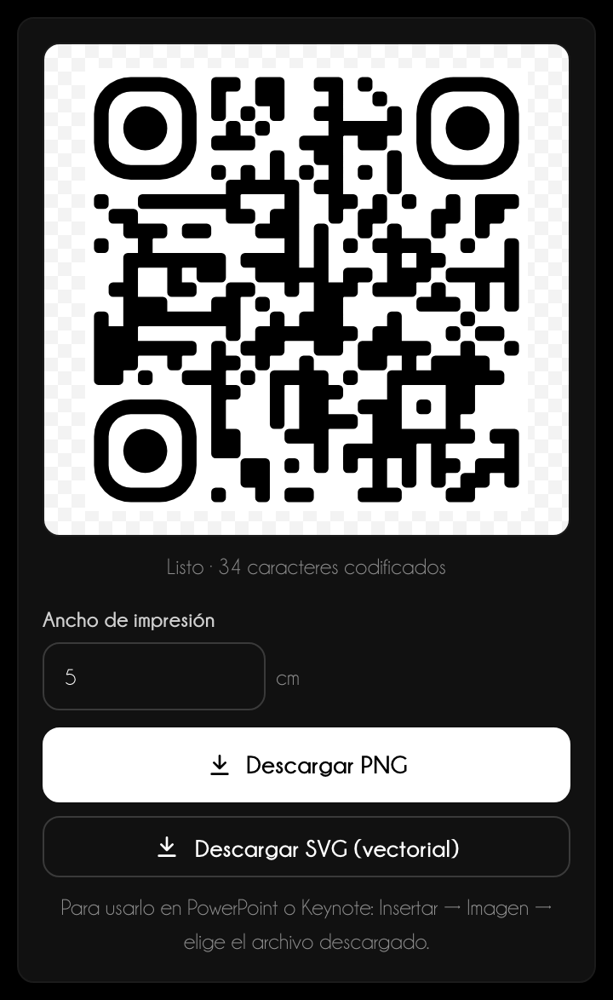
Once tipos: cada uno compone el contenido en el formato que reconoce el teléfono.
| Tipo | Qué ocurre al escanearlo |
|---|---|
| Enlace | Abre una página web. |
| Texto | Muestra un texto breve. |
| Prepara un mensaje con destinatario, asunto y texto. | |
| Teléfono y SMS | Llama o prepara un SMS. |
| Abre un chat. | |
| Wi-Fi | Conecta a la red con nombre, seguridad y contraseña. |
| Contacto | Guarda una tarjeta de visita en la agenda. |
| Ubicación | Abre el mapa desde una dirección o coordenadas. |
| Evento | Añade un evento al calendario. |
| Redes sociales | Abre un perfil: basta el nombre de usuario. |
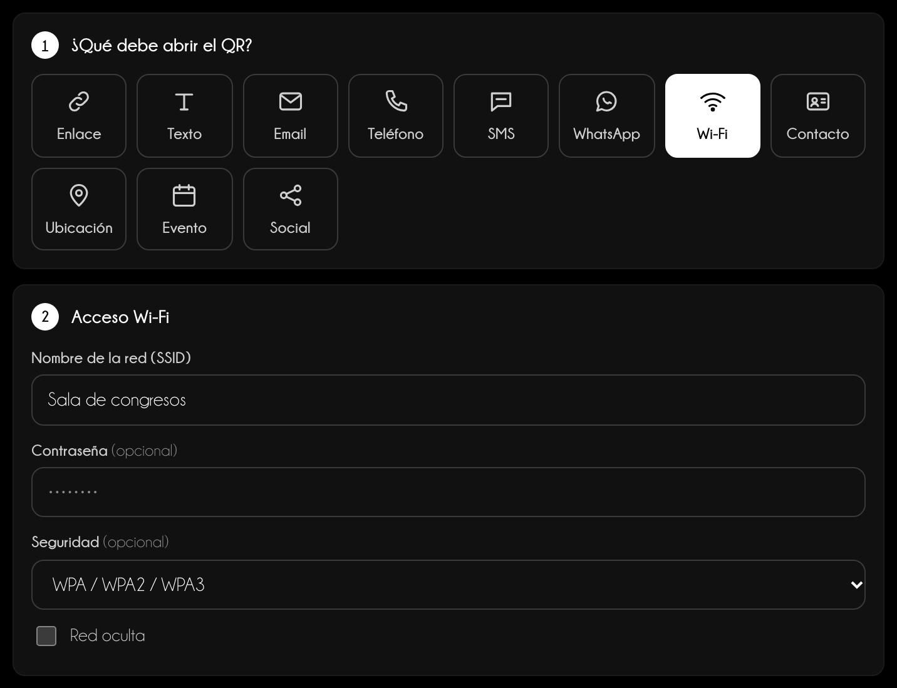
Wi-Fi
La contraseña solo sirve para crear el código: nunca se guarda, ni siquiera en los QR recientes.
El diseño cambia el aspecto, no el contenido: prueba siempre el escaneo con el teléfono.
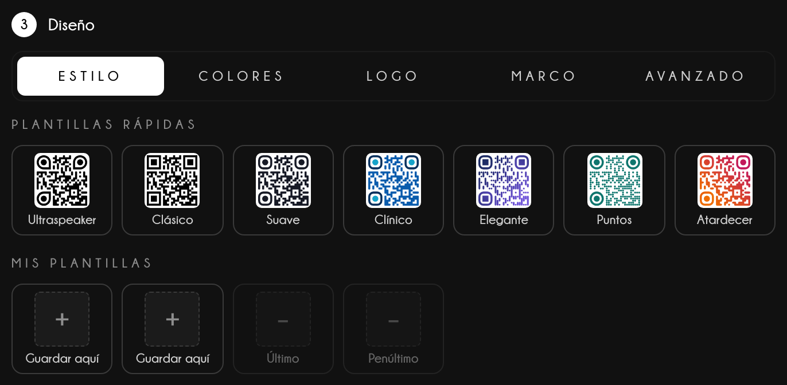
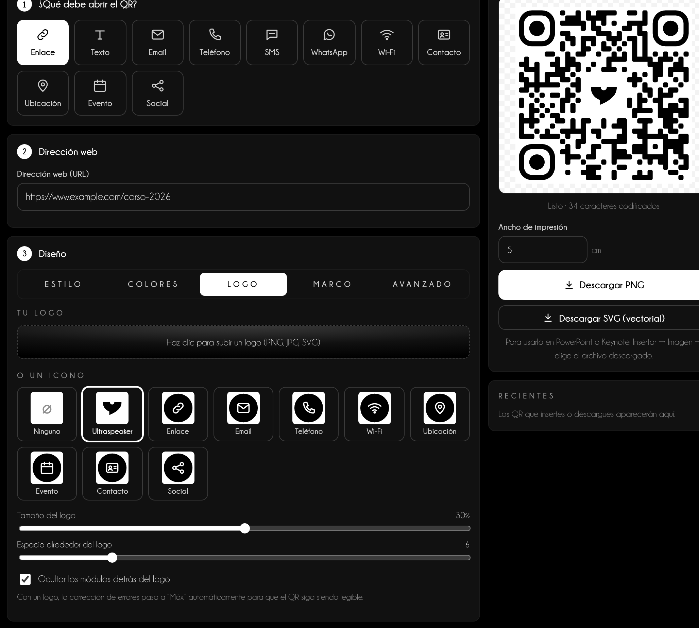
En la sección Referencias un DOI, un PMID o unas palabras del título se convierten en una cita con un QR que abre el artículo.
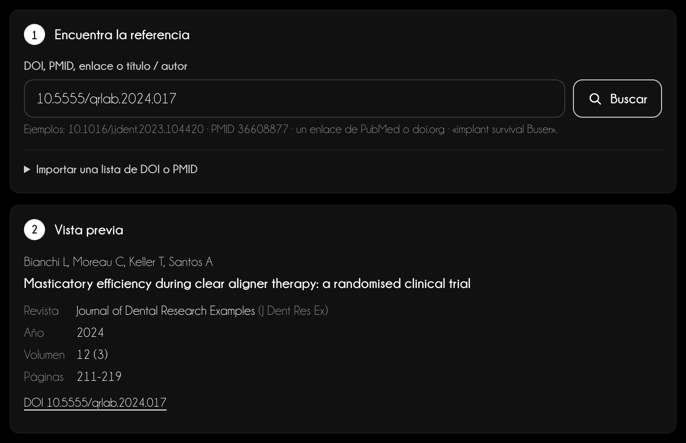
12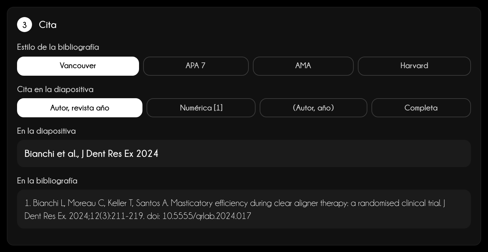
Fuentes
Crossref, PubMed (NCBI) y Unpaywall, consultados directamente desde tu dispositivo. Los avisos son una ayuda: comprueba siempre en la fuente las citas importantes.
Cada artículo insertado o añadido entra en Referencias de la presentación: de ahí salen la numeración, las diapositivas finales y el PDF para el público.
El PDF de la bibliografía
Descargar PDF pide el Título de la ponencia (obligatorio), ponente y fecha, y qué poner junto a cada entrada: texto, enlace, QR o ambos. El PDF tiene páginas blancas, una lista sin números en el orden elegido y «powered by The Ultraspeaker» al pie. En el teléfono se comparte; desde el panel de PowerPoint se abre en el navegador.
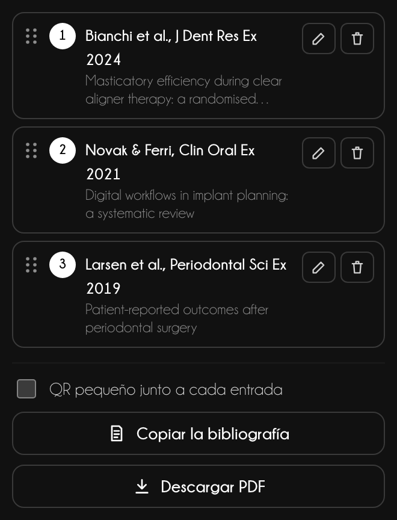
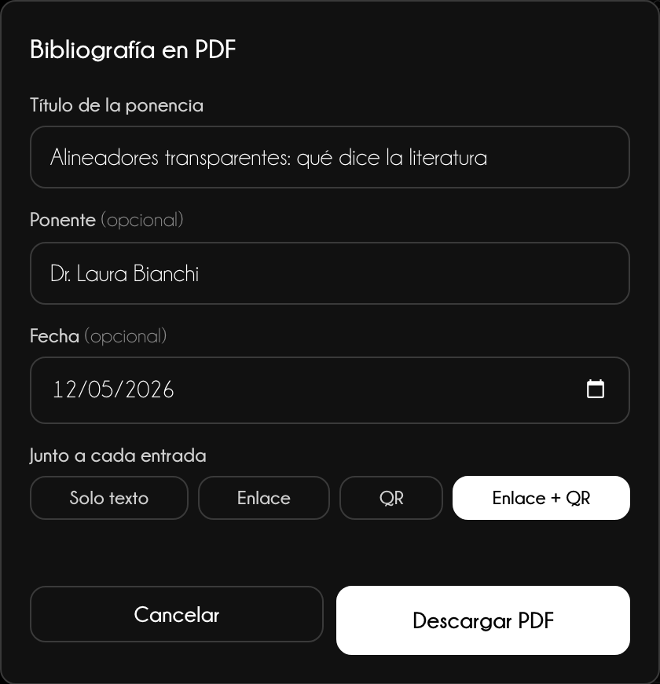
El mismo QR va en la diapositiva, en Keynote o impreso: solo cambia el formato.
Versión web
Descargar PNG crea una imagen a 300 ppp para el Ancho de impresión indicado; Descargar SVG (vectorial) queda nítido a cualquier tamaño. En el teléfono Guardar o compartir abre el menú de compartir: Fotos, WhatsApp, Mail. En Referencias el botón principal copia la cita.
PowerPoint
Elige PNG o Vectorial y el Ancho en la diapositiva, luego Insertar en la diapositiva. Para las citas elige un diseño, qué insertar (Cita + QR, Solo cita, Solo QR), posición, fuente y color: texto y QR se agrupan abajo en la diapositiva.
Próximamente
El panel de PowerPoint está en pruebas y estará disponible en breve. Esta guía ya lo describe por completo.
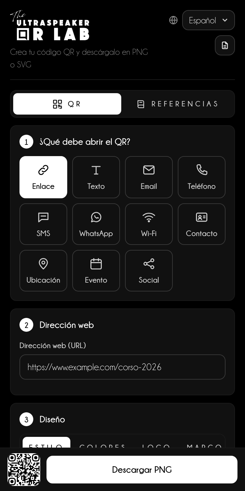
Un QR solo funciona si el público puede escanearlo desde su asiento.
Consejo de ponente
Deja el QR en pantalla al menos 10 segundos e invita en voz alta: «Escaneen el código para descargar las diapositivas». Sin invitación, casi nadie saca el teléfono.
| Sala | Distancia a la última fila | Lado del QR en pantalla |
|---|---|---|
| Aula pequeña | hasta 10 m | al menos 1/6 de la altura de la diapositiva |
| Sala de congresos | 10–25 m | al menos 1/4 de la altura |
| Plenaria | más de 25 m | al menos 1/3, solo en la diapositiva |
Citas
Pon la cita abajo a la izquierda, 14–16 pt, en gris: se lee sin robar atención. El PDF de la bibliografía, enviado después de la charla, vale más que diez diapositivas de referencias.
Soporte
Escribe a info@theultraspeaker.com indicando el ordenador y la versión de PowerPoint.

Knowledge is not enough.
From expert to Ultraspeaker.
theultraspeaker.com · info@theultraspeaker.com